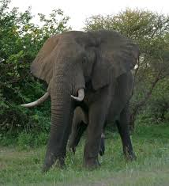

Wildlife conservation is the practice of protecting wild animal species and their habitats to prevent extinction and maintain biodiversity. It involves protecting endangered species, preserving natural ecosystems, and promoting sustainable human activities. Through conservation efforts like habitat restoration, anti-poaching measures, and breeding programs, we can ensure future generations inherit a world rich in wildlife. Every species plays a vital role in maintaining ecological balance, making conservation essential for our planet's health.
Extinct & Endangered Species
Extinction marks the irreversible end of a species when its last member dies, while endangered species are those teetering on the brink of extinction. Our planet has witnessed the tragic loss of countless magnificent creatures, and many more are fighting for survival today.
Each extinction represents not just the loss of a unique life form, but the unraveling of intricate ecological relationships built over millions of years. From the gentle Dodo to the mighty Woolly Mammoth, these species remind us of our responsibility as stewards of Earth's biodiversity. Understanding their stories is the first crucial step toward preventing future losses and protecting the vulnerable species that remain.
Dodo
Extinct flightless bird native to Mauritius.
Read More
The dodo was a gentle, ground-nesting bird that became extinct in the late 17th century due to hunting and introduced species. It is a symbol of human-caused extinction and the importance of protecting vulnerable species.
Tasmanian Tiger
Extinct carnivorous marsupial from Tasmania.
Read More
Also known as the thylacine, this unique predator was declared extinct in the 20th century due to hunting, disease, and habitat loss. It was the largest known carnivorous marsupial of modern times.
Panda
Endangered bear native to China, known for bamboo diet.
Read More
Giant pandas are a conservation icon. Their numbers have increased thanks to habitat preservation and breeding programs, but they remain vulnerable due to habitat fragmentation.
Amur Leopard
Critically endangered leopard subspecies from Russia and China.
Read More
With fewer than 100 individuals left in the wild, the Amur leopard is one of the world’s rarest big cats, threatened by poaching and habitat loss.
Native to the Gulf of California, fewer than 10 vaquitas remain due to illegal fishing practices. It is the most endangered marine mammal.
Rhino (Black)
Critically endangered due to poaching for its horn.
Read More
Black rhinos have suffered dramatic population declines from poaching for their horns, but conservation efforts are helping some populations recover.
Orangutan
Endangered great ape, threatened by habitat loss.
Read More
Orangutans are highly intelligent and share 97% of their DNA with humans. Deforestation and illegal pet trade are major threats to their survival.
Bluefin Tuna
Endangered due to overfishing.
Read More
Bluefin tuna are prized for sushi and sashimi, leading to severe overfishing. Their populations have dropped by over 80% in some areas.
Kakapo
Critically endangered flightless parrot from New Zealand.
Read More
The kakapo is the world’s only flightless parrot. Intensive conservation has brought its numbers up from the brink of extinction.
Pangolin
Most trafficked mammal, critically endangered.
Read More
Pangolins are hunted for their scales and meat. All eight species are threatened with extinction due to illegal wildlife trade.
Wolly Mammoth
Extinct due to climate change and excessive hunting.
Read More
The woolly mammoth roamed the northern hemisphere during the Ice Age. It went extinct about 4,000 years ago, likely due to a combination of climate change and human hunting.
African Forest Elephant

Critically endangered due to loss of habitat and poaching mainly for its tusks.
Read More
African forest elephants are smaller than savanna elephants and are vital to forest ecosystems. Their population has declined by more than 86% in 31 years.
Hybrids & Clones
Hybridization occurs naturally when two related species interbreed, creating offspring with traits from both parents. However, modern scientific cloning allows us to create genetically identical copies of organisms, opening new frontiers in conservation biology.
While natural hybrids like mules have served humanity for millennia, today's advanced reproductive technologies offer hope for saving endangered species through genetic preservation. From Dolly the sheep's groundbreaking birth to attempts at cloning extinct species, these scientific achievements raise profound questions about the ethics and possibilities of genetic intervention in conservation efforts.
Liger
Hybrid offspring of a male lion and a female tiger.
Read More
Ligers are the largest of all big cats, often growing larger than either parent species. They do not occur naturally in the wild and are bred in captivity, raising ethical concerns about their health and welfare.
Zonkey
Hybrid offspring of a zebra and a donkey.
Read More
Zonkeys inherit traits from both parents, often showing zebra stripes on parts of their bodies. Like most hybrids between species with different chromosome numbers, they are usually sterile.
Mule
Hybrid offspring of a male donkey and a female horse.
Read More
Mules are valued for their strength and endurance. They are almost always sterile, but are widely used as working animals around the world.
Dolly the Sheep (Clone)
First mammal cloned from an adult somatic cell.
Read More
Dolly was born in 1996 and proved that it was possible to create an exact genetic copy of a mammal. Her birth was a major scientific breakthrough and raised important ethical questions about cloning.
Noah (Gaur Clone)
First clone of an endangered species (a gaur, a type of wild cattle).
Read More
Noah was cloned in 2001 as an attempt to use cloning for conservation. Sadly, he died soon after birth, highlighting the challenges of cloning endangered animals.
Zorse
A cross between a horse and a zebra.
Read More
Zorses combine the body shape of a horse with the stripes of a zebra. Like other equine hybrids, they are usually sterile and are bred for curiosity or as riding animals.
Major Threats to Wildlife
Wildlife faces numerous threats, primarily driven by human activities. Understanding these challenges is crucial for effective conservation.
Poaching
Poaching is the illegal hunting or capturing of wild animals. It's a significant threat to many endangered species, driven by demand for animal parts (like rhino horn, elephant ivory, and pangolin scales) in illegal wildlife trade. This illicit trade is often run by organized crime syndicates and devastates populations, pushing species closer to extinction.
Illicit Fishing
Illicit fishing threatens marine life and local economies. It includes fishing without permits, ignoring limits, and using banned tools. These actions damage ecosystems and reduce fish stocks.
do stop illegal fishing. Support strict laws, report violations, and choose sustainable seafood to protect our oceans for the future.
Deforestation
Deforestation is the clearing of forests for other land uses, such as agriculture, logging, and urban development. It leads to massive habitat loss and fragmentation, which are primary drivers of biodiversity decline. Animals lose their homes, food sources, and migratory routes, making them vulnerable to starvation, predation, and human conflict. Forests also play a vital role in regulating climate and water cycles, so their destruction has far-reaching environmental consequences.
Join the Conservation Effort!
Every action, no matter how small, contributes to the larger goal of wildlife conservation. Our planet's biodiversity is a precious heritage that needs our protection.
Here's how you can help:
Support Conservation Organizations: Donate or volunteer for reputable organizations working on the ground to protect wildlife and their habitats.
Reduce Your Carbon Footprint: Climate change impacts ecosystems globally. Reduce energy consumption, use public transport, and choose sustainable products.
Make Sustainable Choices: Be mindful of the products you buy. Avoid products that contribute to deforestation (e.g., unsustainable palm oil) or illegal wildlife trade.
Educate Others: Share your knowledge about wildlife conservation with friends, family, and your community. Awareness is key!
Advocate for Policy Change: Support policies and legislation that protect endangered species and their habitats.
Together, we can make a difference and ensure a future where wildlife thrives.